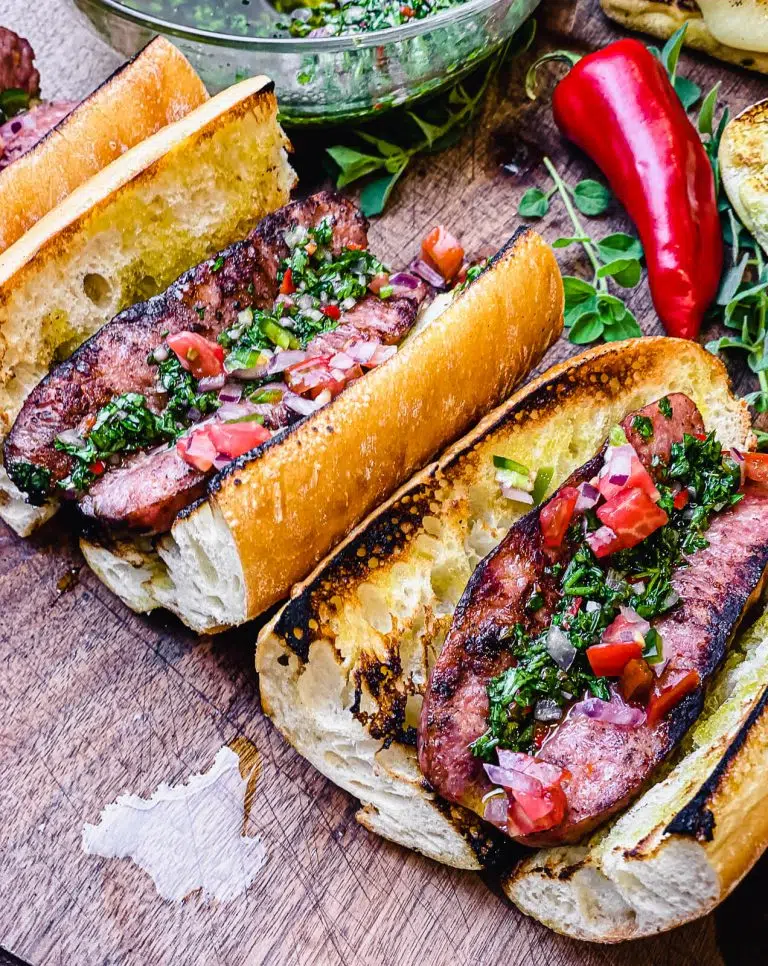

Choripan

Description
Choripán is a combination of the words chorizo (sausage) and pan (bread). The sandwich is served on a French baguette cut into roughly six inch sections, then lengthwise like a hot dog bun.
Ingredients
- 1 lb Argentinian Chorizo
- 1-2 french baguette(s), cut into chorizo length pieces
- 1 tbsp olive oil
- 1 cup chimichurri
- 1 large tomato, diced
- 1 small sweet onion, diced
- 1/2 tsp kosher salt
- 1 tbsp olive oil
- 1 tsp red wine vinegar
Steps
- 1.Light grill and set up for direct medium high heat.
- 2.While the grill is preheating, mix together the tomato, onion, olive oil, vinegar, and salt. Set aside at room temperature.
- 3.Place the chorizo on the grill over direct heat, turning them often in order to get a nice char on the outside. Then, remove from the grill.
- Step 4: Butterfly the chorizo by making a cut running the length of the link. Then spread the link open, exposing the inside of the sausage. Slice the baguette pieces open like a hot dog bun, and drizzle the inside of the bread with olive oil.
- Step 5: Place the chorizo and bread cut side down on the grill. Char the inside of the chorizo and lightly brown the bread. Flip the chorizo and dress with some chimichurri while they finish cooking.
- Step 6: Remove the bread and chorizo from the grill, and assemble sandwiches with chimichurri, and salsa. Serve hot.